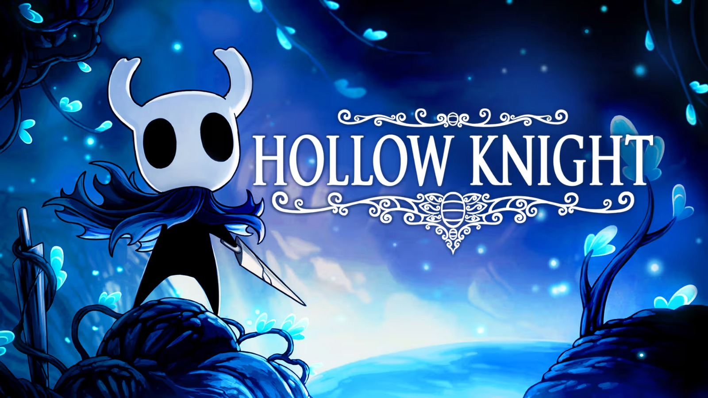

Hollow Knight
Hollow Knight é uma desafiadora aventura de ação em 2D. Você explorará cavernas sinuosas, lutará contra criaturas contaminadas e escapará de armadilhas complexas, tudo para resolver um antigo mistério há muito escondido.
★ 5,0 · 1.240 avaliações